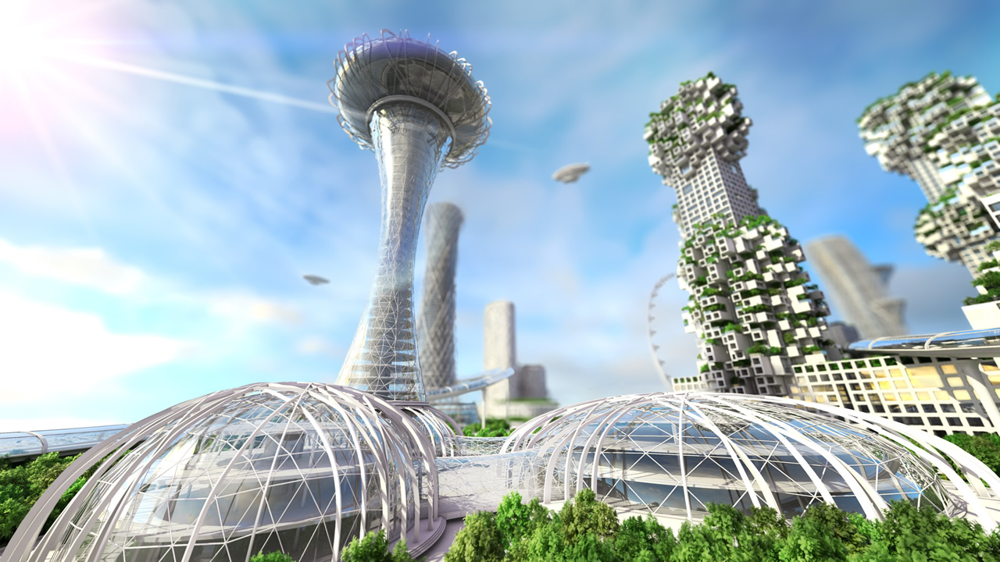
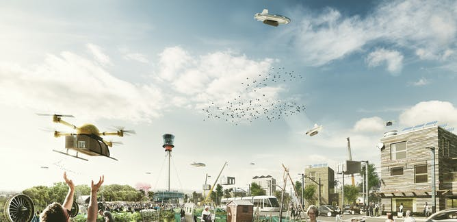

Skip To Content
Cities
Cities of the future will be very cool. They will consist of many fieldless farms for
vegetation. Food will be grown directly in buildings. Additionally, as
opposed to using pure concrete in buildings and parking structures, the concrete
will be poured over orblike plastic that can be used to save concrete, as the top
flat surface is really the only thing that matters in a large structure and generally
the entire thick layer of concrete is wasteful and not necessary as it is primarily
the steel rods that maintain the structure of buildings.
Fieldless farms:
Lettuce is already being grown fieldless in Canada and it will be exciting to see
this technology used around the world to grow food year round and have it accesible
directly in the city. Countries and cities will save money on imports by going fieldless.
Plastic balls (ideally recycled) for large buildings and structures:
Currently there is a lot of waste when building a large structure. A large thickness of
concrete is used in the creation of these structures for cars when in reality it is
the steel that offers all of the support (like bones of a skeleton). Concrete can be poured
over plastic balls to prevent our waste of concrete.

